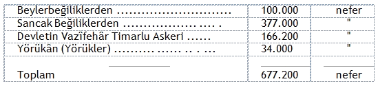
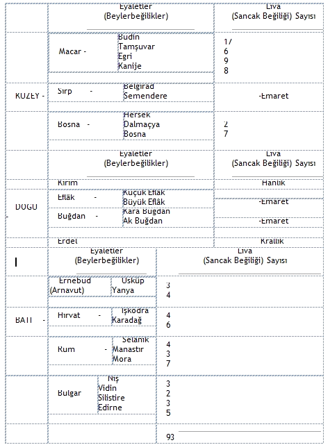
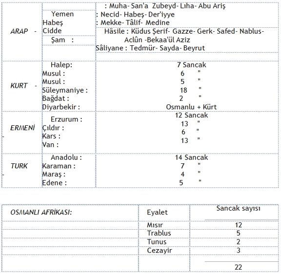
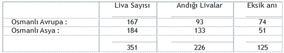
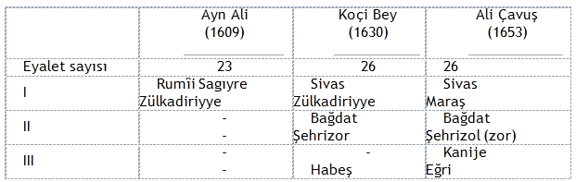
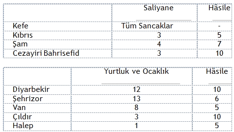
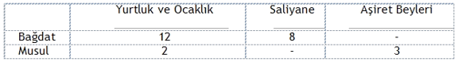
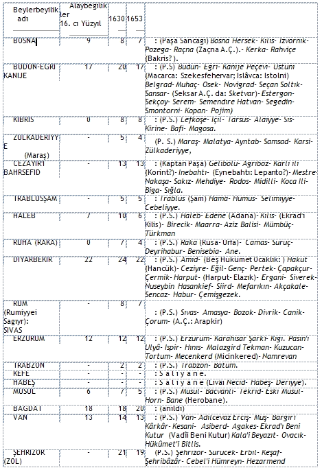

Osmanlılığın temeli Toprak düzeni olduğu gibi, Üstyapısı da gene o düzen açısından biçimlenir. O biçimlenişe İmparatorluk denir. İmparatorluğu belirlendiren ve biçimlendiren şey, Toprakların gelir tipleri olur. Ülke ona göre mülkî düzene sokuldu. Bu düzeni iki Ayrımda özetliyebiliriz.
Birinci Ayrımda: az çok Soyut sayılabilecek olan Toprak geliri biçimlerine göre öznelleşmiş, uzmanlaşmış (spesifikleşmiş) ülke karakteristiklerine değeceğiz.
İkinci Ayrımda: daha Somut adları, sanlarıyle İmparatorluğun Devlet, Hükûmet, Eyalet ve Sancaklarına dokunacağız.
Toprak düzeninin sağladığı gelir çeşitlerine göre, İmparatorluğun başka başka yerleri başka nitelikte adlar taşırlar. Kimi ise, İmparatorluğun aynı bölgesinde başka başka gelir çeşitleri ve idare biçimleri yanyana bulunur.
Osmanlı İmparatorluğu Savaşla kurulduğu için, Ülke İdaresi, (Mülkî Taksimat) bakımından, herşeyden önce Ordu düzenine göre biçimlendi. Ordunun yaşaması gelirle olur.
Onun için Osmanlı, idare ettiği yerlerde iki şeye bakar:
1- Kaç Kılıç-Asker çıkarır;
2- Kaç Akça-Gelir getirir..
Memleket idaresini, bu iki çimçiy açıdan bölümler. İmparatorluğun Kılıç ve Akça bakımından başlıca 3 tür İdare sistemi vardır:
1 - Hâsile,
2 - Saliyane,
3 -Hükûmet..
1- HASİLE (Hâs ile olur): Birbirine zincirleme bağlanmış, tam askerce Üst-Ast ilişkileriyle işleyen Dirlik sistemidir. Has-Zeamet-Timar prensipleriyle güdülür.
16. cı yüzyılın ortalarından 17. ci yüzyılın ortalarına dek İmparatorluğun Hâsla idare edilen Dirlik düzeni topraklarındaki Eyalet (Beylerbeğilik) sayısı hiç değişmez. Hayrullah Efendi'de de, Ayn Ali'de de, Koçi Bey'de de, Ali Çavuş'ta da Beylerbeğiliklerin sayısı hep 25 tanedir. Asıl İmparatorluğun çelik çekirdeği bu Timar-Zeamet-Has adlı Dirlik yapısı olur.
Dirlik düzeninde Beylerbeyi Kanunu şöyle kurallaşır:
"Kangı Beylerbeyilik önceden feth olmuş ise ol Beğlerbeği ötekilerinden öncelik kazanır. Ve herkangi Beğlerbeğilik ki inayet oluna (lütfen verilse), anın Belirli Defterinde ne denlü Has var ise, (Beylerbeyi) ana tesarruf eder. Ve Sefer vâki oldukta (Savaş oldu mu) ne mikdar Hasla tasarruf ider ise 5000 akçada 1 Mükemmel Cebelüsü olup, ardında bayrağın çeker." (Ayn Ali Ris.)
Hâsıla idare edilen bölgelerde: Asker-idareciler kendi geçimlerini kendi Dirliklerinin gelirlerinden kendi elleriyle toplarlar ve kendi elleriyle harcarlar. Yalnız bu harcayış, keyifleri nasıl isterse öyle olamaz. Örneğin: Öteki Dirlikçiler (Zeamet ve Timar sahipleri) de ayrı ölçülerle aynı şeyi yaparlar. Beylerbeyi, Hâs gelirlerinin her 5000 akçasına karşılık, ha deyince savaşa hazır bir, hem de "mükemmel Cebelü" (iyi silâhlanmış Süvari) yetiştirmek zorundadır.
Öteki ast Dirlikçiler (Zeamet sahibi "Zaim"ler ve Timar sahibi "Sepahi"ler) de öyledirler. Yalnız onların, yerine göre değişen ölçüleri vardır. "Kılıç" başına düşen akça sayısı 2000 ile 6000 arasında değişir.
Beylerbeğilere: eyaletlerin fetih sırasına göre öncelik verildiği gibi, bölgenin Tarihcil önemine göre daha gösterişli yetki ve ayrıcalıklar da tanınır. Örneğin: Budin, Bağdat, Mısır gibi, "Vaktiyle Dâr'ül Hükûme" (eskiden başkent) olmuş Eyaletlerin Beylerbeğilerine şu ayrıcalıklar verilmiştir:
1- Koçili kayığa binmek.
2- Rikâb'ında Solak (60, 61, 62, 63 Orta'dan yeniçeri) Peyk yürütmek.
3- Tevcihat yapmak. Maiyyetindeki Mirlivâ'ları (Sancak Beylerini) tâyin ve irsâl etmek.
Beyler arasındaki hiyerarşi'nin genel kuralı şudur:
"Her kangı Beğin HAS'sı ziyade ise astına öncelikli olur: Meğer VEZİR ola..."(Ayn Ali)
2- SALİYANE: Türkçesi "Yıllığına" demektir. O da bir Beğlerbeğilik'tir Ama, Saliyane'nin askerleri, İdare ettikleri bölgelerin gelirlerine, Hâsıla olan Beylerbeğiliklerde olduğu gibi, el koyamaz, el süremezler. Geliri Padişah toplar. Saliyane "kulları"na (Vasallerine Alt askerlerine) maaş gibi geçim dağıtır. Komutanlara "Saliyane" (Yıllık), erlere "Ülûfe" (Gündelik: Yulaf parası) öder, Gelir: Öşür ve Örfi ürünlerinden toplanır. Toplıyan Emîn'dir.
"Saliyane ile olan Beğlerbeğilerin tüm ürünleri Padişahca zapt olunup Beylerbeğisine ve Sancak Beğilerine ve Kul tayfasına hasıl olan malından Sâliyâne ve Ülûfe virülür." (Ayn Ali)
Saliyane'de: "Timar ve Zeâmet yoktur. Fakat Kul tayfası vardır. Tüm ürünleri Evreni tutmuş Padişah Hazretlerince zapt olunur: Hasıl olan maldan Beylerbeğilerine tayin olunan Saliyâneleri ve kul tayfasına Ülûfeleri virüldükten sonra ziyadesi de Devletmedâr'a gelüp Hazine içine girer." (Ali Çavuş)
"Ve Saliyane deyü Beylere Emîn'lerden üçer, dörder yük (yüz bin) akça tayin olunmuştur. Yılda bir kerre alınur. Kapudanların Kadırgası (Savaş gemisi) vardır. Ama Sancağı yoktur. Hemen yılda bir kerre Emîn'lerden "Saliyane" deyü alınur ve Sâliyanenin anlamı, yıllık demektür." (Koçi Bey)
Saliyane'lerin sayısı 9 dur. Ve 16.l7.ci yüzyıllar arasında hemen hiç değişmez. Adları: Mısır - Yemen - Habeş - Basra - Lahsa - Bağdat - Trablus Garp - Tunus -Cezayir Garp'tır. Adlarına bakılınca şu anlaşılıyor: Osmanlılar Uzak ve Müslüman ülkeleri Dirlik Düzenine sokamamıştır.
O Antika uygarlık kalıntılarına, Anadolu'da olduğu gibi Oğuz Türk Oymaklarının Tâze (yâni: Medeniyetle çamurlaşmamış İlkel Sosyalist) insan kanından "Göçebe Aşısı" pek yapılamamıştır. Çünkü, en az 6 bin yıllık Uygarlık hep oradaki insanı çiğnemiş, posaya çevirmiştir.
Ancak, gene oraların insanları, Bizans Nüfusu gibi Hristiyan olmadıkları için, silâhla karşı çıkmadıkça zor köteğe uğratılmamıştır. O uygarlık posası yığınlar, "gelene Beğim, gidene Paşam" demekte bin yıllık idmanlıdırlar. Başlarına tünemiş çoğu yabancı efendileri defedilir edilmez, Osmanlıya yatkın bulunmuşlardır. Hepsi koyu Müslüman (üstelik "Kavm'i Necib'i Arebden": Peygamber dilini konuşur) bulunduklarından, bu "Din kardeşleri"ne kılıçla Dirlik düzeni yüzde yüz dayatılmamıştır.
Bu hipotezi en tipik biçimleriyle Irak örneği okşar.
Anadolu'ya yakın olan ve Türk Göçebelerinin epey at teptirdikleri Musul: Antika Medeniyet ve Müslüman alanı iken bile Hâsıle Eyaleti olarak Beylerbeğiliğin Dirlik Düzenini yaşar.
Anadolu'ya büsbütün uzak düşen Basra tümüyle Sâliyane'dir.
İkisi ortası duran Bağdat Beylerbeğiliği ise, olağanüstü karmaşık toprak düzeni mozayiğidir. Hemen bütün Osmanlı Toprak ekonomisi çeşitlerinden bir eşantiyon taşır. Başlıca en önemli üç tip Toprak düzeninden örnek verelim:
1- DİRLİKÇİLİK: Bağdad'ın 20 Sancağından 8'i: "Erz'i memleket sayılmıştır." (Ali Çavuş). Sancak adları: Bağdat - Zenkâbad - Hille - Cevâz - Rumahiye - Atey -Cengûle - Karadağ... Bunlar, klâsik Timar - Zeamet düzenini yaşarlar.
ERZ'İ IRAK: Öteki 12 Sancağa verilen niteliktir. Adları: Dertenk - Semavat -Beyat - Derne - Debâlâ - Vasıta - Kerend - Demurkapu - Karaniyye - Kaabur -Keylân - Esah'dır
Bu sancakların Toprak Düzeni iki tip gösterir :
2- YURTLUK ve OCAKLIK TİPİ: "Sancak beyleri vardır ki, yurtluk ve Ocaklık gibidir." (Ali Çavuş). Bunlar Yazu ile Deftere geçerler. Komutanı, öteki Sancak Beğleri gibi "Tabel ve Alem" (Davul ve Bayrak) sahibidir. Ama, Fetih sırasında "hizmet ve itaat" gösterdikleri için, Sultan'ın verdiği "Temessük" (benimseyiş belgesi) gereğince "azil ve nasp kabul etmezler."
3- SALİYANE: "Geri kalan kurâ ve mezari (köyler ve ekinlikler) in tüm ürünleri Mîri'ce zaptolunmuştur." (A.Ç) denildiğine göre, bu yerler Saliyâ'neyi andırır Ama gerçekte "Kurrâ ve Mezâri" basitçe "Köyler ve Ekinlikler" anlamına gelmez. Özel bir terimdir. Kimi Serhad beylerine: Vergi tahsili, Savaş mühimmatı tedariki, kaçan çiftçileri yerine getirme gibi hizmetler karşılığı olarak verilmiştir.. Bunlar da 2 bölüktürler:
a) Timar ile olanlar: Beratli "Mâlik ve Kenzler";
b) Muafiyet ile olanlar: Vergiden bağışıklı Çiftlik ve Baştına'lar.
3. HÜKÜMET: Ne Hâsile, ne Saliyane olmıyan bölgelerdir. Buralarının karakteristiği, alabildiğine çok çeşitli idare sistemlerini içlerine almalarıdır.
Ayn Ali ve Koçi Bey bu konu üzerinde pek durmuyorlar. Ali Çavuş daha net konuşur. "Hükûmet"i şöyle tanımlar:
"Fetih sırasında hizmet ve itaatleri karşılığı olarak sahiplerine tefviz ve temlik olunmuştur. Mülkiyet yolu ile tasarruf ederler, hattâ Memleketleri kalemden ayırtlanmış (mefruzül kalem) ve maktûül kademdir (ayak basılmaktan kesintili?). Ürün kapıları Hâkanlık Defteri içine sokulmamıştır." (A.Ç.)
Bu genel tanımlamaya giren yerlerin büyüklüğü ve küçüklüğü üzerine bir şey denilmiyor. Ama, biz Osmanlı İmparatorluğu içinde yukarıki tanımlamıya az çok uyabilecek yerleri gözönüne getirelim. Bunlar sırasında Hânlık ve Krallık kadar büyük geniş ülkeler de, bugün her biri ayrı "Millet" ve "Devlet" olmuş Prenslik'ler ve Dayılık'lar da, birer ilçeyi aşmıyan küçük Aşiretçik ve Kentçik'ler de bulunur.
Bu "Hükûmet"ler üzerine bir fikir edinmek için iki gruba ayrılmaları mümkündür:
1- Devlet-Hükûmetler.
2- Aşiret-Hükûmetler.
Devlet-Hükûmetler :
a) Hristiyan olanlar: Erdel Krallığı ile "Memleketeyn" (Çiftülke) adlarını alırlar.
b) Müslüman olanlar: Kırım Hânlığı ile "Garp Ocakları" adlarını alırlar.
Dört Devlet-Hükûmete karşı Osmanlının davranışı, pek Hristiyan - Müslüman ayırdı yapar görünmemektedir. Buraların somut karakteristikleri şöyle özetlenir:
"ERDEL" KRALLIĞI: bugünkü Macaristan sayılabilir. Özellikleri: 1 - Kral yerli halkça seçilir, Osmanlıca "Nasp" edilir. 2 - Kalesinde Türk askeri bulunmaz.
O nedenle "Eyâlet'i Mümtâze" (Ayrıcalıklı Eyâlet) adını alır.
"MEMLEKETEYN" (Eflâk-Buğdan): bugünkü Romanya sayılabilir. İlkin orada da Kral (Erdel'de olduğu gibi) yerli halkça seçilir idi. G : 1015 (İ. D.: 1600) yılından beri iş değişir:
1- Memleketeyn Voyvoda'sı: "Divan'ı Hümâyun"da bulunan Rum tercümanlarından gönderilir. Korona (Taç) giymez, Kul Kethuda'larının Kalensuva'sını giyer.
2- Voyvoda'nın yanına : Divan Efendisi, "Beçeli Ağası" denilen Yeniçeri Subayı ile 700-800 kadar "Beçeli Nefer" takılır.
Daha sonraları bu platonik bağımsızlık ta sakıncalı görülür. Tuna ırmağının önemli yerlerine "Müstahfaz" (Koruyucu) asker ve Kadı'lar yerleştirilir.
KIRIM HANLIĞI: Fâtih çağında "Ordû'yü Hümayûn"a katılmakla yetinen bağımsız bir Vasal (Tapulu) devletti, Kanunî Süleyman çağında evrene sığmıyan Osmanlı, Kırım Hân'larını da Azl ve Nasp etmiye başlar.
Ayrıcalıkları şöyle özetlenir:
1- İzâfi Özerklik (Otonomi) : Hânlık, içişlerinde özerktir. Dışişlerinde yalnız Hristiyan Devletlerine karşı Savaş açıp Barış yapmakta bir kerteyedek bağımsızdır.
Nitekim, G.: 1090 (İs. D.: 1640) yılına dek Viyana'ya ayrı Elçi gönderir.
1- Hân, kendi adına "Sikke" (para) basabilir.
2- Hâna karşı (Azil ve Nasb vesilesi ile de olsa) "Mülûke" (Krallara, Hükümdarlara) karşı gösterilen "İyzâz" (Saygı) ve "Teşrifat" gösterilir.
3- Sefer (Savaş) için kendisine "Nâme'i Hümayûn" (Padişah mektubu) ile "Sekban beha" (Yol parası) iletilir.
4- Hân "azl" edildi mi, sokağa atılmaz: İslimiye, yahut Yanbolu, yahut Tekirdağı'nda "terfih" (rahat yaşantı) ettirilir.
GARP OCAKLARI: şimdiki Trablus - Tunus - Cezayir devletlerini içine alır. Bu yerlerin Osmanlılaşması, söz yerinde ise "Devletçiliğimiz" ile değil, "Özel girişim" ile gerçekleşmiştir. İlk girişkinler, Adalarla Anadolu'da suç işleyip kaçmış, tam : "ipten, kazıktan kurtulma" kişilerdir.
Bedavadan yaşıyan bu kişiler Korsanlık'tan başka geçim yolu bulamazlar. Özellikle Malta'ya, İtalya'ya, İspanya'ya saldırırlar. Arada azaldılar mı, kimi görevlilerini İzmir, Ege vb. bölgelere gönderip, şu haberi uçururlar:
"Solumadan can vermek, terlemeden mal kazanmak istiyenler bayrağımız altına gelsin."
Korsan akınlarıyla sürülen Batı Ocakları topraklarını Feth etmek Osmanlı, için işten olmadı. Fetih sırası, sözü geçer korsan başılara Dayı (Anne kardeşi! ) denildi. Dayıların idaresi altında Askercil örgütlenmeler geliştirildi.
Eski Grek Kentleşme kolonilerinin geleneğini izlemişe beyziyen Garp Ocakları ile Ana Vatan arasındaki ilişkiler karşılıklı alışveriş biçiminde oldu. Ocaklar: Osmanlıya Hediye'ler veriyor, Osmanlıdan gemi, barut, top alıyordu. Ocak, Donanmâyi Hümâyun'un yanında Sefere gidiyordu. Ocak'ların Kalelerine bırakılan 5-6 bin Türk askeri azaldıkça, yerini Ocaklılar alıyordu.
Osmanlılık başının çaresine düştükçe, Ocaklar da yavaş yavaş Avrupalılarla Andlaşma serbestliğini aldılar.
Bugün "Kürdistan" diye anılan yerler, hâlâ Aşiret biçimli İlkel Komuna kalıntıları içinde yaşar. Osmanlı, vaktiyle bu Kürt aşiretlerinden yararlanarak Fetihler yaptığı için, ve kendi Aşiret geleneklerinden sezinlenerek, onlara İmparatorluk içinde ayrı özerk "Hükûmet"çikler tanımıştı.
16. cı yüzyıl ortasında o çeşit Aşiret - Hükûmetler, Saliyane'ler gibi 9 tanedir: Cizre - Ergil - Genç - Palu - Zdarro - Ekrad - Mihruvana - Oşti - İmadiye...
Bunların Osmanlı ile ilişkileri üzerine pek az bilinen şeyler var. Aşiret -Hükûmetlerinin:
"İçlerinde Osmanlı Komutanlarından (Ümerâ) ve Kul (Padişahın aylıklı askeri) tayfasından hiç kimse yoktur. Cümle kendülere mahsustur." (Ali Çavuş)
Yâni Komutanları da, erleri de Aşiret uşağı olur. Belki de İlkel Komuna yapılarının içine işlenmezliği yüzünden birer dokunulmazlık kazanmışlar ve bunu andlaşmalarla Osmanlıya kabul ettirmişlerdir:
"Ve bunlar Ahitnameleri (Andlaşma yazıları) gereğince: bundan böyle Azil ve Nasb'ı kabul eylemezler. Ama, topu da Sultan Hazretlerinin emir ve fermanına itaatlidirler.
"Öteki Osmanlı Komutanları gibi, kangı (hangi) Eyalete tâbi iseler, (onların) Beylerbeğileri ile birlikte Sefer eşerler (Savaşa giderler). Kavm (ulus) ve Kabiyle ve başka asker sahibidirler." (Ali Çavuş)
İlkel Komuna insanına Osmanlının anlayışını, daha doğrusu karşılıklı anlayışı açıklıyan bir olay da, gene Kürt Başkenti sayılabilecek Diyarbekir Eyaletinin durumudur. Irak için Bağdat ne ise, Kürdistan için Diyarbekir odur. Bağdat gibi Diyarbekir'in Toprak ilişkileri de çok çeşitli bir Mozayiktir. 4017 Kılıç'ı ve 18.000 Cebelü'sü ile Rumeli ve Anadolu'dan sonra 3 üncü, 22 Sancak sayısı ile ikinci gelen Diyarbekir, toptan bir Hâsile Beylerbeğiliktir. Ancak o genel nitelik içinde başlıca 3 tip idare vardır:
1- KLASİK TİMAR-ZEAMET biçimi. Osmanlı komutanlarının idaresinde bulunan 10 Sancaktır.
Onların dışında kalan 12 Sancak, Klasik Dirlikçilik'ten apayrı iki tip Timar -Zeâmet - Has düzeni gösterirler. Hepsine birden Yurtluk ve Ocaklık adı verilir.
2- DAVUL ve BAYRAK SAHİPLERİ:
"Anlar dahi öteki komutanlar gibi Tabel ve Alem sâhipleridir. Hatta tâyin olunmuş İcmallü Hâsları vardır ki, ellerine Berât'ı Hümayûn virülmiştir." "Selef (daha önceki kuşak) Sultanlardan ellerinde olan ahitmâmeleri gereğince azil ve nasbi kabul eylemezler. Ama, içlerinde Zeamet ve Timarlar vardır. Seferde kendüleri Züemâ ve Timarlu Beylerbeğileriyle eşerler."(A.Ç.)
3- DAVULSUZ ve BAYRAKSIZLAR:
"Onlardan başka Zeamet ve Timar ile başka Aşiret Beyleri vardır. Lâkin anlar Tabel ve Alem sahibi değillerdir. Belki Zaîmler makamındadır." (A.Ç.)
Mirî Toprak düzeninin az çok dışında kalmış görünen yerler, İmparatorluğun Anaülke sayılmayacak parçalarıdır. Osmanlı İmparatorluğu, tıpkı yerine geçtiği Bizans İmparatorluğu gibi, herşeyden önce bir Kilit - Boğazlar İmparatorluğudur. Bu kilidin zemberek gövdesi Anadolu, Demir kancası Rumeli'dir.
Anadolu ile Rumeli dışında kalan bölgeler, genellikle uzak yollar veya sınırlar üzerinde, stratejik önemi bulunan yerlerdir. Osmanlılık oralara şu veya bu nedenle kendi Mirî Toprak düzenini dayatmamış, adapte etmiş görünür. Böyle Dirlik düzeni ötesinde bırakılmış yerler başlıca üç örnekte toplanabilir :
1- KIRIM HANLIĞI, ERDİL (Şimdiki Macaristan) KRALLIĞI, MEMLEKETEYN (İki Ülke: Eflâk - Buğdan: şimdiki Romanya) : İç işlerinde az çok muhtariyetli birer Dominyon sayılabilirler.
Bunlar, Karadeniz-Tuna deniz-ırmak yollarının Karaavrupa içlerine uzanan karakol noktaları gibidir. Bu Serhat (Savaş-sınır boyu) toprakları İmparatorluğun Ortaavrupa'daki Karadeniz Üsleri sayılabilir.
2- GARP OCAKLARI: Cezayir, Tunus ve ilh. ülkelerinde korsan "Dayı"ların nöbet tuttukları yerlerdir. Oraların Toprak düzeni de Serhat usulü değişken biçimlere girer.
Bu topraklar, İmparatorluğun Batı-Güney Avrupa'ya (o zamanlar İspanya, Fransa ve daha çok İtalya'nın Venedik, Cenova, Floransa gibi bezirgân Kentlerine) karşı kurulmuş Akdeniz Üsleri sayılabilir.
3- SİYALANE ile güdülen yerler: genel olarak eski İslâm ülkeleridir. Halep, Bağdat, Basra'da, Akdeniz adalarında: Has, Zeamet, Timar usulü yoktur. Öşür ve "Örfi Hâsılat" toplanır. Bu hâsılattan Beylerbeği'lerin, Sancak Beğilerin, Yerli Kulu'nun (yercil: mahallî asker'in) maaşları çıkarılır. Onlardan arta kalan gelirler, her yıl Devlet hazinesine gönderilir.
Buraların sırf eski İslâm ülkesinden olmaları değil, İslâmlığın da içine girdiği ENESKİ MEDENİYET ÜSLERİ bulunmaları ilginçtir. İlk iki Kara Üsleri ile Deniz Üsleri saydığımız ülkeler daha çok BATI medeniyetlerine, üçüncüler DOĞU medeniyetlerine açılmış yerlerdir. Yer ayrımının MEDENİYET (Uygarlık) anlamı budur.
Genel MEDENİYET olayı içinde, en aktif rolü oynıyan BEZİRGÂN EKONOMİ eğilimli BÜYÜK TİCARET YOLLARI'nı ele alırsak:
1- Kırım-Memleketeyn-Erdel toprakları KARADENİZ - TUNA su yollarına;
2- Garp Ocakları (Cezayir-Tunus) toprakları AKDENİZ su yollarına;
3- Siyalâne toprakları UMMAN DENİZİ su yollarına.. doğru evel ezel uzanmış ve kurulmuş Antika ÜS'lerdir.
Bu yapısı ile Osmanlı İmparatorluğu, bütün Antika Medeniyetler gibi, herşeyden önce EVRENSEL, yâni sınır tanımıyan, insancıl bir "DÜNYA DEVLETİ"dir. Bütünü ile yeryüzünü kaplar. Kendi dışında bir Devlet veya Toplum, yahut İnsanlık bulunduğunu görse bile tanımaz, "Kabul" etmez.
Bu Dünya Devletinin ilk yüzyılları, bütün Ortaçağlar gibi epey karanlıkta kalır. Ancak 16. cı yüzyıl ortalarında Osmanlı Toplumu: Ekonomi temeli ile, Üstyapı kuruluşları ile artık standartlaşmış, oturaklaşmış; daha doğrusu "Yazıya girmiş" bulunur. Klasik Osmanlı düzeni, kimilerinin deyimi ile "oturmuş" olur.
Bu "oturmuş" toplumun Ana-ülkeleri, asıl "Memleket" saydığı memleketi Anadolu ile Rumeli'dir. Her iki ana bölgelerinin çalışan büyük yığınları Türkçe "ÇİFTÇİLER", Arapça "REAYA" (Güdülenler) adını alır. Çiftçiler, "Memleket Toprakları", "Mirî Arâzî" üzerinde çalışırlar. İmparatorluğun ekonomi temeli, başlıca üretim ilişkisi, dolayısı ile Anadâvâsı Toprak problemi, Mirî Arazî meselesi gelir
"DİRLİK DÜZENİ"nde toplanır.
Onun için Mirî Topraklarındaki Dirlik Düzeninin gelişimini gözden geçirmek, Osmanlı Tarihinin Maddesi'ni elle tutmak olur. Mirî Toprak düzeni kavranılmadıkça, Osmanlılığın ve Türkiye'nin hemen bütün Toprak meseleleri, bilmeceleşir.
İmparatorluk, bütün canlı varlıklar ve toplumlar gibi, "gökten zenbille": tam ve mükemmel ve bir daha değişmez biçimde inmedi. Tam tersine, iç ve dış olayların etkisiyle, sonuna dek boyuna değişerek geldi.
Değişikliklerin hepsini sıraya ve listeye koymak elden gelemez. Çünkü, yüzlerce yıl o değişiklikleri, yapanlardan başkası bilmedi. Osmanlılığın "Yazı"ya, yâni Uygarlık Tarihine girişi ancak İmparatorluk ile başladı. Onun için bu ayrımda, en tipik "mülkî taksimat" momentlerinden birkaçına işaret etmekle yetinilecektir.
Az dağınık ta kalsa, o birkaç somut örnek: İmparatorluğun bütünü ve gelişimi üzerine bir fikir vermiye yarıyabilir.
Osmanlı İmparatorluğu (Taksimat'ı Mülkiyye) Mülkiye Bölünüşleri açısından: Doğuş, Yükseliş, Çöküş çağlarında çok değişik yapı ve örgütlenmeler gösterir. O yapı üzerine en klasik örnek Kanunî Süleyman (1522-1566) çağında, 16.cı yüzyılın ortasında bulunur. Kanunî çağı, Tarihin Diyalektiği ile hem en yüksek doruk, hem tepe aşağı alçalışın başıdır. Onu Osmanlıdan iyi gören ve gösteren olmamıştır.
Koçi Bey şöyle der:
"Hümâyunca da bilindiği üzere, Osman Oğulları yüce zinciri (ki ulu Tanrı onu Mizân gününe dek pekiştirsin), Pâdişahlardan önce Memleket yaygınlığı ve Hazine bolluğu ve Şevket yanından olgunluğu bulan rahmetli ve gafletli Sultan Süleyman Han olup, yine evren ihtilâline kapı açan olaylar dahi onların zamanında ortaya çıkup, devlet (o zaman HK.) gücünün doruğunda olmağla belirtisi ol zamanda duyulmayıp, bir kaç yıldır ki açığa vurdu."
"Ol zaman": 16. cı yüzyıl ortasıdır. "Bir kaç yıldır" denilen günler: 17. ci yüzyılın ortalarıdır.
Kanunî'nin son günlerindeki İmparatorluk toprakları, Hayrullah Efendiye (Devlet'i Osmâniye Tarihi; C. II, s. 211-214) göre: Avrupa - Asya - Afrika ülkeleri ile Adalar olarak bölümlenir.
Bütün İmparatorluk 34 Eyalet (Beylerbeyilik), 377 Liva (Sancak Beğilik) tir. Her Eyalet Vâlisinin "Kapu Halkı" (kapısındaki asker) 3.000 den, her Sancak Beğininki 1.000 kişiden aşağı çıkmaz.
Bu hesapça Sefer (Savaş) sırasında Osmanlılığın Silâhlı Kuvvetleri Kanunî çağında şöyle hesaplanabilir:

Bugün, kala kala, Osmanlının doğru dürüst iki Eyaleti kadar yer tutan Türkiye'de: Barış zamanı yarım milyon, Savaş zamanı en az bir milyon asker beslendiği gözönüne getirilsin. Türkiye vatandaşının sırtına, Osmanlı yurttaşının 34 katı aşırı bir silâhlı kuvvet masrafı bindiği kendiliğinden anlaşılmaz mı?
Köylünün, üretici güçler bakımından Kanunî Süleyman çağına göre arpa boyu ileri gitmediği, belki toprak erozyonları, traktörün otlak bırakmayışı, Orman katliâmı, ve ilh. ve ilh.. yüzünden epey geri kaldığı düşünülsün. "Memleketin efendisi" ilân ettiğimiz, "Yerlerin esiri" durumundaki köylülüğün niçin o denli Sultan - Halifeler sıla hastalığına (nostaljisine) tutulduğu, neden yemeyip içmeyip "Kur'an Kursları" ile "İmam - Hatipler"e dört elle sarıldığı, dolayısı ile de kendilerine "Sâhibülarz" pozu veren Finans - Kapital güdümlü Tefeci - Bezirgân Partilere intihar ederce oy verdiği epey ortaya çıksa gerektir.
OSMANLI AVRUPASI: 11 "Memleket" sayılır. Bu memleketlerde: Tatar - Macar - İslâv - Rum - Boşnak ulusları yaşar. Bu ulusların İdaresi.: 2 Devlet - Hükûmet (1 Hanlık. 1 Krallık), 3 Emaret (Komutanlık: Prenslik: Beğlik), 18 Eyalet Valiliği (Beylerbeğilik), 167 Liva (Sancak Beğlik) ile yürütülür.
Osmanlı Avrupasında 44.000 Timarlu Zeamet askeri, 31.000) Müsellem ve Muâf(Bağdaşıklı) Yörükân (yörükler) ile 74.000 Eyalet Muhafaza askeri bulunur. Muhafaza askerlerinin Ulûfe'si (Gündelikleri) : her Eyaletin Rüsumat ve Aşar'ından tahsis olunur. Vâli ve Mîrmirân (Beylerbeği) lerin, Vezir'lerin: Eyalet'lere mensup Hâs'ları vardır.
Osmanlı Avrupası: Kuzey - Doğu - Batı olmak üzere üçe bölünür:

OSMANLI ASYASI: 4 Bilâd (Kentler), 19 Eyalet, 184 Liva ile yürütülür. İdareleri Hâs, Saliyane, İltizam, Mâlikâne tiplerindedir. 91.000 Timarlu daimî Muhafız askeri vardır.
Asya "Beldeler"i 4 etnik grupa göre ayırtlanır:
Livalar

ADALAR (AKDENİZ) : Rodos - Ağriboz - İstanköy - Midilli - Sakız - vb... NOT :
Not:
Kanuni çağı için Hayrullah Efendi'nin verdiği rakamlar biraz karanlıktır. 11 Memleket, 5 (Hanlık - Krallık - Emaret) bir yana bırakılırsa, yalnız Asya ve Avrupa için verdiği rakamlarla, andığı adlar birbirini tutmuyor.

Avrupa ve Asya'da 351 Livâ var diye yazılıyor. Bunların ayrıntıları anılınca ortaya ancak 226 livâ çıkıyor. 125 livâ hangi eyaletlerde? Açık kalıyor. Tekmil İmparatorlukta 377 livâ gösteriliyor. 3 kıtadakiler 373 sayılıyor: 4 eksik. Eğer Akdeniz adaları (Cezayir'i Bahri Sefid) 13 livâ ise: onlarla 386 livâ tutmalı: 9 fazla.
Eyaletler tüm olarak 34 tür deniliyor. Bu rakamı Ayn Ali ile Ali Çavuşta doğruluyor. Ama, ayrıntı verilirken Avrupa'da 18, Asya'da 10, Afrika'da 4 Eyalet anılıyor. 1 Eyalet te Adalar olunca, toplamı: 33 tutuyor.
Hayrullah Efendi'nin rakamlarını yorumlamak güç.
Kanunî'den 100 yıl kadar sonra, (17. ci yüzyıl ortaları), Osmanlı ülkesinin Mülkiye Bölümleri iki büyük Ana Beylerbeğilik (Rumeli - Anadolu) çevresinde oturaklılaşmıya başlıyor.
Daha doğrusu, Hayrullah Efendi'nin çizdiği Coğrafya ve Etnik Mülkî Bölümlenişin yerini, dar Stratejik bir büzülüş ve derleniş alıyor. Kırım Hanlığı, Erdel Krallığı, Sırp, Eflâk, Buğdan Emaretleri anılmaz oluyor. Rum, Bulgar, Arnavud, Hırvat etnik grupları Rumeli Beylerbeyiliği içinde eritiliyor.
İslâm - Arap - Afrika ülkeleri Saliyane biçiminde doğrudan doğruya Padişah Hâsları arasına sokuluyor. (Mısır - Yemen - Habeş; Garp Ocakları: Trablus - Tunus -Cezayir; Basra - Lahsa, (hatta) - Bağdat bu biçime giriyor). Kırım'da Kefe diye gene Saliyaneyi andırır bir Beylerbeğilik ayrılıyor.
17. ci yüzyılın başından ikinci yarımına dek (1602-1653) Osmanlı'nın Hâsile olan Beğlerbeğilikleri hep 25 olarak sayılır. 9 Saliyane Eyaleti o Beylerbeğililerin dışında bırakılır. Yalnız Ali Çavuş'ta : Bağdat Saliyane sayıldığı halde, gene Hâsile sırasına sokulur.
O, Beylerbeğiliklerden yarım yüzyıl içinde adı değişmeksizin kalanlar şunlardır:
1- Rumeli,
2 - Anadolu,
3 - Diyarbekir,
4 - Bosna,
5 - Budun,
6 - Tamşuvar,
7 - Karaman,
8 - Trabzon,
9 - Şam,
10 - Halep,
11 - Erzurum,
12 - Çıldır,
13 - Kars,
14 - Van,
15 - Musul,
16 - Cezayir Bahrisefid,
17 - Kefe,
18 - Kıbrıs,
19 -Trablusşam,
20 - Rakka (Maa Ruha).
Bunlardan sonraki adları anılan Beylerbeğılikler, hem sayıca, hem adları bakımından değişiklik gösterirler. Değişiklikleri, Tarih sırası ile üç Osmanlı yazarında şöyle buluyoruz :

Ayn Ali ile Koçi Bey arasında 21 yıl var. Koçi Beyle Ali Çavuş arasında 23 yıl var. 1609 yılı 23 olan Hasile Beylerbeğilikler, artarak: 1630 yılı 26 görünür.1653 yılı 26 sayılır. Olabilir. Yahut bir sayış yanılgısı vardır.
I. Sayılı sütunlardaki değişiklik normaldir: 1609 yılı "Rumîi Sağıyr" (Küçük Rum Ülkesi) sayılan yerler, 1630 ile 1653 yılları kestirme "Sıvas" eyaleti olmuştur. Gene 1609 ve 1630 yılları "Zülkadiriyye" denilen, 1653 te "Maraş" olmuştur.
II. sayılı sütunlardaki değişiklik te normaldir. 1609 yılı ayrıca bulunmıyan: Bağdat ve Şehrizol (Zor Şehrı) Eyaletleri, 1630 yılı kurulmuş ve 1653 te kalmıştır.
III. sayılı sütunda: 1630 yılı anılan Habeş Eyaleti, ondan önce ve sonraki 20 yıllarda anılmaz. Buna karşılık 1653 yılı Kanije ve Eğri diye izahsız 2 Beylerbeğilik sıraya konulur.
Bunlar biçimcil takıntılar ve değişiklikler.
Asıl ilginç olan şey, Beylerbeğiliklerin öz açısından gösterdikleri değişikliklerdir.16. cı yüzyıl ortasındaki İmparatorluktan Hayrullah Efendi'nin aktardığı Mülki Bölümlerde, yalnız Şam Eyaletinin 7 Livâ'sı Saliyâne'dir. Bir de Diyarbekir, hem Kürt hem Osmanlı Beylerin idaresinde gösterilir.
17. ci yüzyıl belgeleri daha açıklayıcı olurlar. 1630 yılı için Koçi Bey, saydığı 25 Eyaletten birinci olarak Bağdat'ı Saliyâne sayar: onun da 7 Sancağı Timar - Zeamet idaresinde gösterilir. Diyarbekir: Vezir Beylerbeği idaresinde: 5 Hükümet -OcaklıkJıdır. 8 Sancak, Kürt Beylerinindir ve 11’i Osmanlı Sancağıdır. İkinci olarak Kıbrıs'ın 8 Sancağından: "bu üç Sancak Saliyâne ile virilür" der.
1653 te Ali Çavuş (Sofyalı) nın, hepsinden daha edebiyatsız olan yazılarından başka şeyler öğreniyoruz. Diyarbekir'in 24 Sancağı 22 ye inmiştir. Bunlardan Osmanlının payı 10 Sancak olur. 12 Sancak doğrudan doğruya, Timar - Zeametleri bulunan, Tabel ve Alem'leri olan ve olmıyan Yurtluk ve Ocaklıklar sayılır. 20 Sancaklı Bağdat için de mesele hemen hemen aynıdır. (8 Erz'ı Memleket. 12 Erz'ı Irak). Oysa,1630 da Bağdat'ın 18 Sancağı gösterilir.
Aynı Eyalette Hasile olan Sancaklarla birlikte Saliyane yahut Yurtluk ve Ocaklık veya Aşiret Beylikleri olan Sancaklar şöyledir:

Daha karışık olanlar:

Demek 11 Eyaletin 72 Sancağından 51 tanesi Yurtluk ve Ocaklık adıyla, 3 tanesi Aşiret Beyleri için ayrılarak, en az merkeziyetli düzendedirler. 58 tanesi ortada, (Klasik Osmanlı) Dirlik düzenlidirler. Kefe bir yana bırakılırsa, en çok Merkeziyetli (doğrudan Padişahın eliyle geliri toplanan) 18 Sancak vardır.
RUMELİ: Beylerbeğiliği ilkin Paşa Sancağı ile birlikte 17 Sancaktı:
1 -Alacahisar,
2 - Avlonya,
3 - Delvina,
4 - Dolakin,
5 - Elbasan,
6 - İşkodra, (İskenderye),
7 - Köstendil,
8 - Mora,
9 - Ohri,
10 - Pirzerin,
11 - Priştine (Vulçetrin),
12 - Selânik,
13 - Tırhala,
14 - Üsküp,
15 - Vidin,
16 - Yanya,
17 - Paşa Sancağı (Eyalet Merkezi.)
Sonra (Özi - Kılbron - Kili) livâları katılarak, Silistre Eyaleti de (18 -Akkerman, 19 - Bender, 20 - Çermen, 21 - Kırkklise, 22 - Niğbolu, 23 - Silistre, 24 -Vize) Sancakları ile Rumeli oldu. Paşa Sancağının 2 (Yemin: Sağ, Yesar: Sol) Alaybeyi, öteki Sancakların birer Alaybeyi vardı. Bunların ayrı Sancakları ve Mihterhaneleri bulunuyordu.
17. ci yüzyıl boyu Rumeli sistemi bozulmadı. Daha sonraları Mora (Grek) Eyaleti 6 Sancağa bölündü.
1653 yazısında 24 Klasik Sancak Beğliğinden başka 3 Müsellem ve 6 Yörük Sancakları anılır.
Müsellem Sancakları:
1- Kızılca
2- Cengâne
3- Çermen.
Yörük Livaları:
1- Ofcabolu
2- Vize
3 - Tanrıdağ
4- Selanik
5- Kocacık
6- Naldöken.
Öteki Eyaletlerden 16. cı yüzyıl ortasından 17 ci yüzyıl ortasına dek Sancak sayısı hiç değişmiyen Beylerbeğilikler yalnız 5 tanedir :
ANADOLU: 14 Sancak:
1- Paşa Sancağı Kütahya
2- Saruhan
3- Aydın
4- Karasi (Balıkesir)
5- Menteşe
6- Hamidili (İsparta)
7- Hüdavendigâr (Bursa)
8- Karasi
9- Bolu
10-Ankara
11- Karahisarsahip
12- Sultanönü (Eskişehir - Söğüt)
13- Çankırı
14- Kastamonu.
KARAMAN : 7 Sancak:
1- Paşa Sancağı Konya
2 – Niğde
3 - Beyşehir
4- Kırşehir
5-Akşehir
6- Aksaray.
TAMŞUVAR: 6 Sancak:
1- Paşa Sancağı Tamşuvar
2- Libva
3- Göle
4- Morava
5-Yanova
6- Genad (A.Ç.'den)
KARS : 6 Sancak:
1- Paşa Sancağı Kars maa (ile)
2- Pasin - Küçük Bahçıvan (Erdihan'ı Küçük A.Ç.)
3- Zaroşad
4- Geçevan (Guceran A.Ç)
5- Kağızman maa (ile) Suregil
6- Cucıvan (A.Ç.'den).
ÇILDIR: 13 Sancak:
1- Paşa Sancağı Çıldır
2- Hartuş (Erdenuc A.Ç.)
3- Ardahan (Ardahan'ı Büzrük A.Ç.: Büyük Ardahan)
4- Bezerk
5- Haçrek (Ahklek A.Ç.)
6- Postho
7- Mahcil
8- Acara
9- Pumbeh (Penk A:Ç.)
Ocaklık olan Sancaklar:
10- Pertekrek
11- Levane
12- Nisfılevane
13- Şavşat.
ŞAM : 11 Sancak:
1- Paşa Sancağı Şam
2- Gazze
3- Safed
4- Kudüs Şerif
5- Acelun (Lecun?)
6 - Sayda
7- Beyrut
8- Nablus
9- Tedmür
10- Gerek Süveyk (Kerek maa Süveyk K.B.)
11- Akâ
Sancak sayıları değişen Eyaletleri şöyle sıralıyabiliriz:
